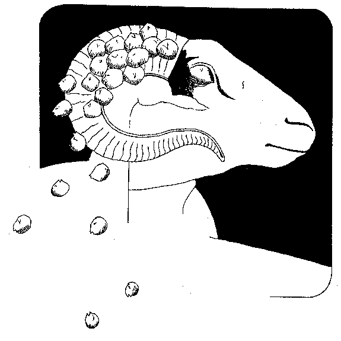

Click HERE to register your comments...or improve the recipe.Or do you want to take another look at the homepage MENU?
Or do you want to SEARCH for something specific?
Or do you want to take another look at the homepage MENU?
Or do you want to SEARCH for something specific?
Moroccan Chickpea Soup
(Chorba Bil Hamus)
This hearty Moroccan soup is fragrant, earthy, colorful, and chunky with a lemony spice broth tanged yellow by saffron. In Morocco it would be one of several courses, but it's excellent served hot as a meal to 6-8 people.
-

- 1 cup dried chickpeas, soaked overnight
- 1 lamb shank
- 1 chicken with giblets
- 1/2 cup parsley
- salt and 1/4 teaspoon pepper
- 2 pinches of saffron, heated and pulverized
- 1/4 teaspoon turmeric
- 1/4 teaspoon ginger
- 1/3 cup onion, grated
- 3 Tablespoons olive oil
- 1 Tablespoon tomato paste
- 2 medium potatoes, peeled and diced
- 1/4 cup lemon juice
Garnish: parsley and/or cilantro, chopped
Drain the chickpeas and put them in a Dutch over with the lamb, chicken, giblets, parsley, salt, spices, onion, and oil. Cover with 8 cups of water, bring to a boil, then reduce the heat--covering and simmering for an hour. Add the tomato paste and simmer for another hour.
Fish out the lamb, chicken, and giblets and cut into a dice, discarding the bones. Return the meat to the soup, add the potatoes, and simmer another 30 minutes. When ready to serve, stir in the lemon juice, adjust for seasoning, ladle into bowls, and garnish with a handful of chopped parsley or cilantro.